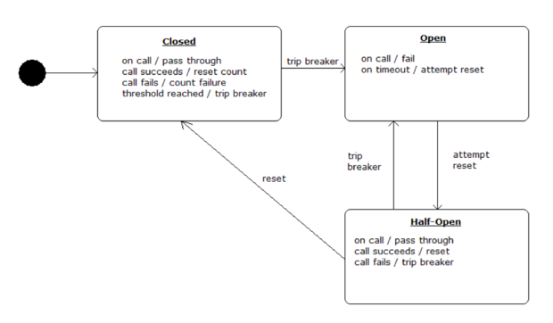

Going Cloud Native
Circuit Breaking
Interactions between services need to be...
Reliable
Fault Tolerant
Cascading Failure
GIVEN: app that relies on 30 services
each service: 99.99% uptime
99.7% uptime
Cascading Failure
0.3% of 1 billion requests = 3,000,000 failures
Reality is generally worse
And if we don't recover gracefully...
source: www.dailymail.co.uk
Circuit Breaking

Speed | Simplicity | Control
(C) Copyright 2016 Pivotal Software, Inc. All Rights Reserved.